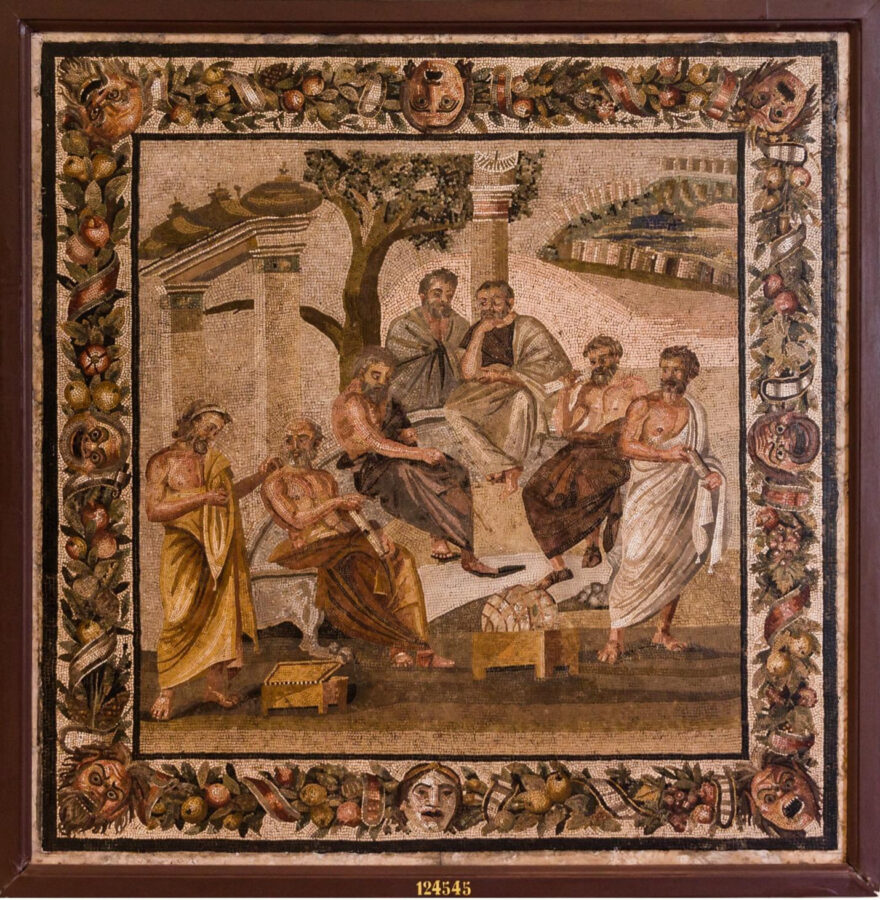

W. J. T. Mitchell: THE ACADEMY IN A STATE OF SIEGE: PICTURES OF AN INSTITUTION
“THE ACADEMY IN A STATE OF SIEGE: PICTURES OF AN INSTITUTION”
RSVP encouraged
You are invited to join us at the Logan Center for the Arts for a public lecture by W. J. T. Mitchell titled “THE ACADEMY IN A STATE OF SIEGE: PICTURES OF AN INSTITUTION.”
Since there is no doubt that the academy is in a state of siege at the present time, it seems like a good moment to reflect on the persons, places, and things we call “academies” and their long struggle with the forces that both threaten and define their existence. This will be a slide lecture on images and narratives of academia from the story of Akademos, to Plato’s Academy, to the Florentine Academy of Drawing, to the British Royal Academy, to Pierre Bourdieu’s Homo Academicus. W. J. T. Mitchell will focus on the role of the visual arts in the academy (including his own), and conclude with contemporary attempts to re-imagine the academy as itself a work of art.
Moderated by Artist and Gray Center Director of Programs in Fellowships, Zachary Cahill.
Hosted by the Open Practice Committee in the Department of Visual Arts and co-sponsored by the Departments of Art History and English, 3CT and Critical Inquiry
W. J. T. Mitchell is Distinguished Professor Emeritus at UChicago. He has published widely on the role of images and media in political culture and the visual arts, including articles about Israel/Palestine dating back to the 1980s. His books include Iconology, Landscape and Power, What Do Pictures Want? Cloning Terror: The War of Images, 9-11 to the Present, Seeing through Race, Occupy: Essays in Disobedience (with Mick Taussig and Bernard Harcourt), and The Last Dinosaur Book. His latest book, Seeing through Madness: Essays in Crazy Times will be published in 2026.